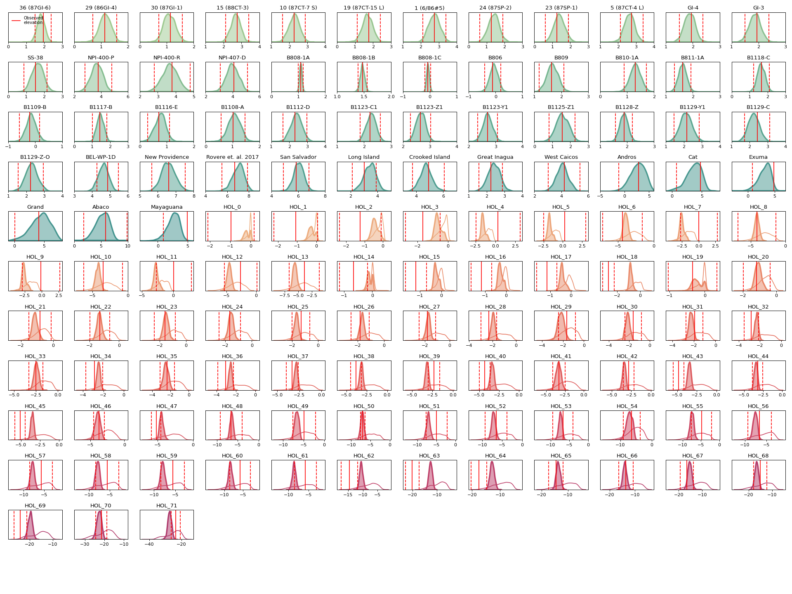
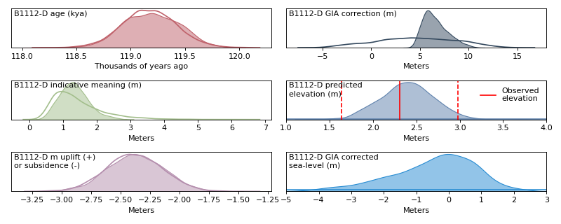
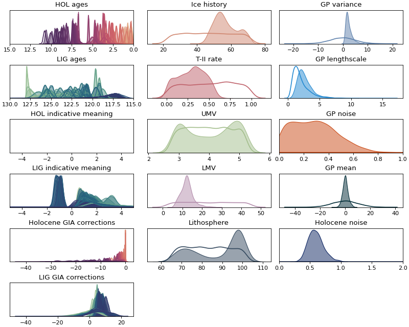

Plotting¶
A summary plot of prior, prior predictive, posterior, and posterior predictive samples. |
|
A plot showing the predicted elevation prior (unfilled), posterior (filled), and observed (red; \(\mu\pm2\sigma\)) elevations of each sample. |
|
A plot showing the prior (unfilled) and posterior (filled) components of the predicted elevation for a single observed (red; \(\mu\pm2\sigma\)) sample. |
|
Not yet implemented. |
- lig_sea_level.plotting.get_id(data, sample_name, region)[source]¶
Helper function to get the prior and posterior trace index that correctly matches the given
sample id.
- lig_sea_level.plotting.observations(data, full_trace)[source]¶
A plot showing the predicted elevation prior (unfilled), posterior (filled), and observed (red; \(\mu\pm2\sigma\)) elevations of each sample.
(Source code, png, hires.png, pdf)
 - Parameters
- data: dict
A dictionary from inference.load_data.
- full_trace: arviz.InferenceData
An
arviz.InferenceDataobject containing the full set of prior, prior predictive, posterior, and posterior predictive samples fromget_model()inlig_sea_level.model.
{kind=link}
{kind=link}
- lig_sea_level.plotting.regional_sea_level(X_new, inference, color, ax, plot_max_like=False)[source]¶
Not yet implemented.
- lig_sea_level.plotting.sample(data, full_trace, sample_name)[source]¶
A plot showing the prior (unfilled) and posterior (filled) components of the predicted elevation for a single observed (red; \(\mu\pm2\sigma\)) sample.
(Source code, png, hires.png, pdf)
 - Parameters
- data: dict
A dictionary from inference.load_data.
- full_trace: arviz.InferenceData
An
arviz.InferenceDataobject containing the full set of prior, prior predictive, posterior, and posterior predictive samples fromget_model()inlig_sea_level.model.- sample_name: str
The name of a sample from the
sample idcolumn of the data table.
{kind=link}
{kind=link}
- lig_sea_level.plotting.summary(data, full_trace)[source]¶
A summary plot of prior, prior predictive, posterior, and posterior predictive samples.
(Source code, png, hires.png, pdf)
 - Parameters
- data: dict
A dictionary from inference.load_data.
- full_trace: arviz.InferenceData
An
arviz.InferenceDataobject containing the full set of prior, prior predictive, posterior, and posterior predictive samples fromget_model()inlig_sea_level.model.
{kind=link}
{kind=link}